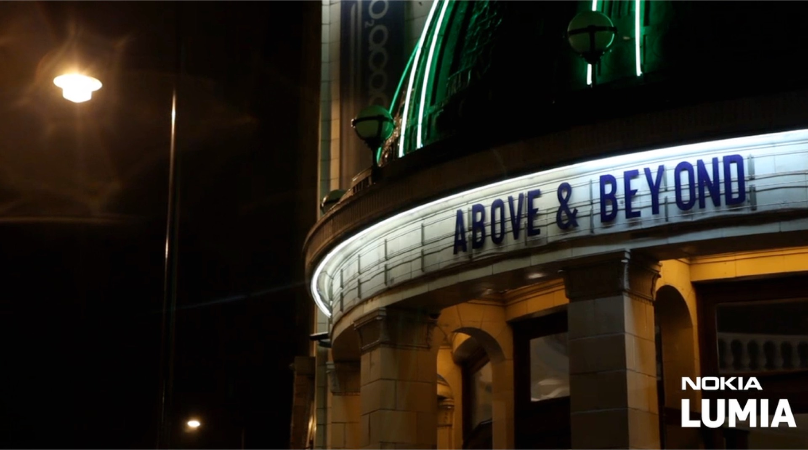
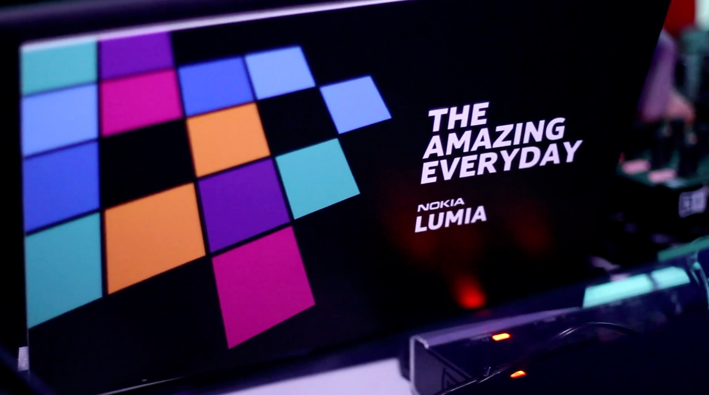
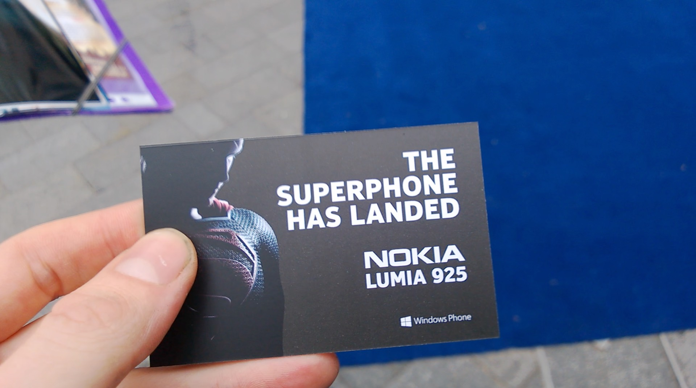
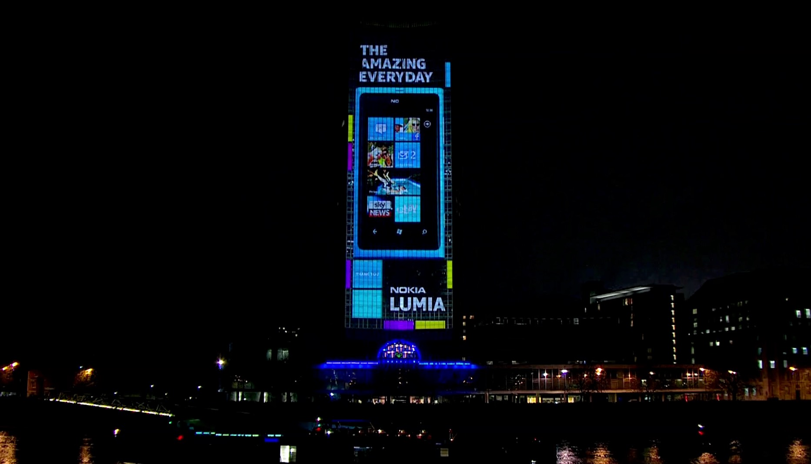

Nokia
Product launches, event coverage, hardware and ecosystem films.

IMMERSE
We have had a great relationship with Nokia since we worked on a film for the N8 handset.
The N8 had a marketing tie-in with the remake of Tron which helped us secure a wide reach for the release of that first film.



AMAZE
We made films for several handsets and product launches with all of them getting a great reception from both the team at Nokia and the wider global community of Nokia fans.



As well as making important product films we covered multiple events ranging from the Turner prize to the projection mapping of Millbank tower with Deadmau5 to the premiere of the Supemman franchise re-boot Man Of Steel.
